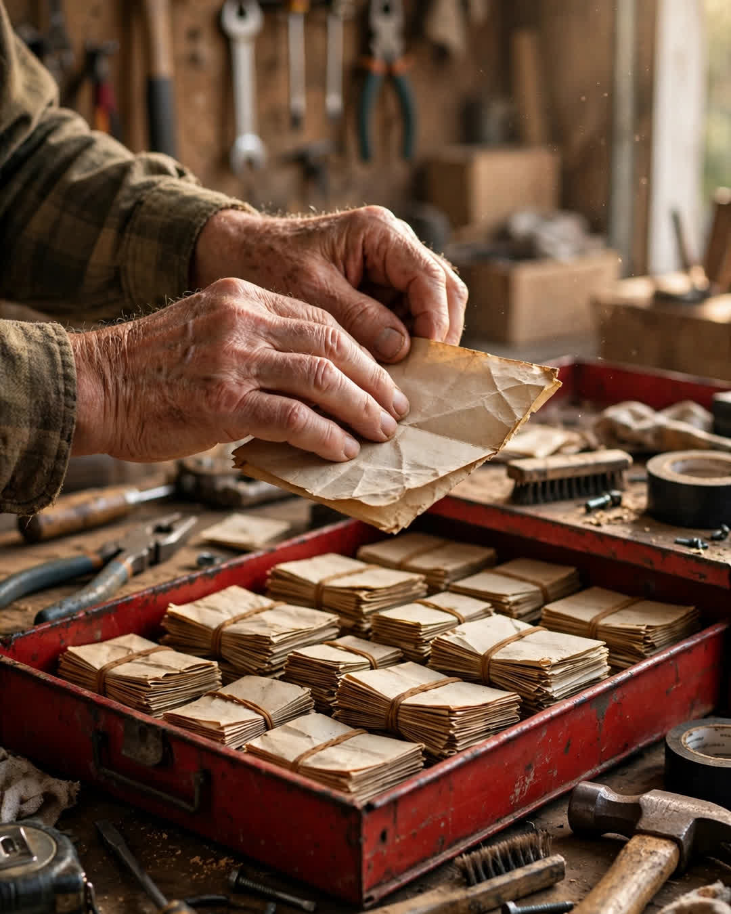

The Lunchbox Notes
A Clipp Kaili original story

For thirty-eight years, my mother wrote a note and put it in my father's lunchbox, and for thirty-eight years, he told her he threw them away.
He said it every so often, at family dinners, shaking his head while she pretended to be offended. "Thirty-eight years of notes," he'd say. "A man's got to eat, not read a novel." And Mom would swat the air and say she wrote them for the sandwich, not for him, and the grandkids would laugh, and that was the whole story.
Dad worked the line at the plant from 1983 until the spring he turned sixty-five. Rain, snow, night shift, day shift — the black lunchbox went out the door at five in the morning, and in it, under the sandwich, was a square of paper from a notepad by the phone.
He retired on a Friday. The plant gave him a cake, a card signed by men he'd trained, and his parking pass to keep "for memory's sake." On Saturday morning, he asked me to help him clean out his workbench in the garage, because, he said, "Your mother has a list for this garage, and it starts today."
The toolbox was the big red one, the one from his first year at the plant. Bottom drawer. Locked — it had been locked my entire childhood, and I had built whole pirate fantasies around what a man keeps locked in a toolbox.
He unlocked it with a key he wore on the same ring as the house key, and I stopped breathing for a second.
Notes. Thousands of them, in rubber-banded stacks by year, going soft at the edges.
Every note. Thirty-eight years of them. The very first one on top, in Mom's young handwriting:
"Day 1. Eat all of it. I love you. Come home safe — that's the whole job."
There were notes from the years he worked double shifts and notes from the year Mom was sick herself and wrote them left-handed from the couch so he wouldn't know how much her hand shook, and I know that because one of them said so: "Handwriting's bad today. Love's not. Eat."
There was a note from the day I was born. "You're a father. There's a sandwich, and then there's the rest of your life. Eat the sandwich first, you'll need it."
"Dad," I said. "You told her you threw them away."
He picked up the day-one note and smoothed it flat with his thumb, careful as a man handling something holy.
"Son, if I'd told her I kept them, she'd have tried to write them better." He shrugged. "I didn't want better. I wanted the ones she wrote half-asleep with her hair up, thinking about nothing but me and a sandwich. Those were the real ones."
That evening, he carried one stack — just one, the first year — into the kitchen and set it on the table where Mom was shelling peas. He didn't say a word. He didn't have to.
She read the top one. Then she put her hand over her mouth, and fifty years of my parents' marriage was suddenly standing right there in the kitchen, young again.
He never threw away a word she gave him.
He just kept them where a working man keeps his most important tools — locked up, oiled with use, and carried to the job every day of his life.
This story is a work of fiction, written to touch hearts and bring families closer.
← Back to all stories